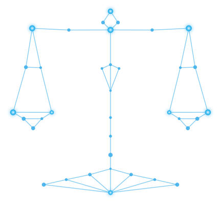
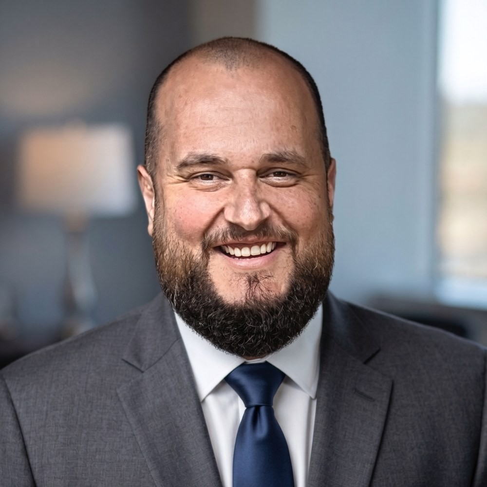

Out-works
We dig into the full record, applying decades of hands-on industry experience to every engagement.
Glynloen Insurance Consulting brings decades of hands-on industry experience to litigation, claims, and regulatory matters, retained by insurer-side and policyholder-side counsel alike.
Committed professionals. Intensely focused.That is the standard we build to: following the record wherever it leads, citing everything, and delivering findings the Court can actually use. Every conclusion is reviewed and signed by Rick Bingham, the firm's principal.
More about the firm →
We dig into the full record, applying decades of hands-on industry experience to every engagement.
An exhaustive review of the record, with expert analysis, meticulous citations, and demonstratives the Court can rely on.
Findings communicated persuasively in plain English, for regulators, for clients, for jurors, and for the Court.
Bad-faith and claims disputes are won or lost in the claim file: thousands of pages of adjuster notes, estimates, inspection reports, and correspondence. Rick Bingham reviews the file with a special emphasis placed upon the pleadings. Our case-mapping team, led by Dan Weber, maps it end-to-end: checking it for completeness, identifying missing information, and placing every material fact on a timeline tied to the precise page it came from.
Tech-assisted, not machine-driven: the technology makes the record searchable, linked, and as complete as the production allows, and every judgment is our expert’s. The opinions that follow are anchored to the record, line by line.
See how case-mapping works →
Every material fact on a timeline, tied to its source page and the issues it bears on.
How the loss estimate moved across revisions, and who handled each change.
Every adjuster, inspector, and expert mapped to the role they played in the file.
Gaps and duplicated pages flagged before the analysis begins, so they are known before anything is argued.
Every quoted passage verified against the source before it reaches the report.
Timelines and exhibits built directly from the mapped record, ready for the Court.
Bad-faith analysis leads GIC’s testifying practice, alongside claims-handling, reinsurance, and receivership disputes. On every engagement, GIC provides the Court with the results of a thorough investigation into the insurance-related issues at the center of the litigation, organized around a disciplined three-step method. No court has ever excluded Rick Bingham as an expert, under Daubert, Rule 702, or any state standards.
See our full expert-witness practice →
We review the pleadings to identify the key allegations, so the analysis stays focused on the matters that will decide the case.
We conduct an exhaustive review of the record to render preliminary opinions and target additional analysis and research where it counts.
Rick and the GIC team synthesize the findings into a report with detailed citations and demonstratives, communicated clearly to the Court.
GIC also consults outside litigation: claims and reserve audits, business interruption claims, regulatory matters before state Departments of Insurance, and work for the receivers of troubled and insolvent insurers. The same rigor GIC brings to expert testimony carries into this work, delivered as an audit, a study, an adjudication, or advice rather than as testimony.
See all consulting services & engagements →
Numerous engagements involving the adjudication of claims against insolvent insurers, plus reserve studies spanning auto, environmental, and more.
Learn more →The industry faces mounting BI complexity that demands hands-on, technical know-how and proven problem-solving, the kind that comes only from having done the work.
Learn more →We assess your current policies and practices to surface issues before they become problems, and defend against regulatory overreach when it comes.
Learn more →Work for court-appointed receivers, liquidators, and rehabilitators, and for the parties who deal with them: estate adjudication, reserve studies, reinsurance collection, and run-off.
Learn more →We love what we do and do it with passion. We look forward to deploying our talents on your behalf and helping you conquer your toughest challenges.
Has worked in nearly every capacity across the insurance industry, regulatory and business alike, and leads every GIC engagement through analysis and testimony.

Dan is an attorney and consulting expert who leads Glynloen’s case-mapping work, methodically constructing and exhaustively citing the record reviewed as a part of each engagement.
Read more about Rick Bingham & Dan Weber’s qualifications, and meet the rest of the Glynloen team.
Meet the full team →“I have worked with Rick Bingham in many capacities over the course of 30 years, including as a consultant, client officer, adverse witness, and expert witness for clients. His insurance industry knowledge and vast governmental service and private industry experience are unparalleled. His written expert witness reports are detailed, focused, and written persuasively in plain English. Rick is front of mind when I need an insurance expert.”
“When I think of Glynloen, one key word springs into my mind. That word is ‘expert.’ It is always a privilege to rely upon the subject matter expertise and professionalism of Rick and his team. As an attorney with 34 years of experience at global insurance groups, brokerages and law firms, I do not give out participation trophies. To me, Glynloen exemplifies excellence. I will refer Glynloen as a trusted expert, resource or consultant any time, on any matter.”
“Glynloen brings a unique blend of insurance experience and subject-matter expertise to both internal investigations and litigation consulting. From comprehensive data gathering to best-in-class analytics, Glynloen is able to assemble creditable and dependable reports that ably support both corrective action plans to regulators, and expert testimony in court. As a 42-year lawyer and insurance industry veteran, I find Glynloen to be a trusted and indispensable resource.”
“In my experience, few people have the breadth of knowledge of insurance that Rick Bingham possesses. He has worked in almost every capacity in the industry and understands both the regulatory and business aspects of the business. Along with the insurance expertise, Rick has a unique ability to lead and manage teams, which has helped my firm navigate large and complex projects to a successful conclusion.”


We are experts in our field, and it is our mission to deliver the result your project deserves. Tell us about the matter, and let's work together.
Call or text Rick: (630) 940-5319